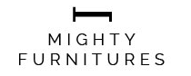

My Work
Cybermity
Cybermity is an automated web application developed and powered by Kodez Consulting to help organizations qualify for selected security certifications. I contributed to the project from its inception, supporting architecture design, database configuration, microservices setup, and full-stack development through to MVP delivery.
My Responsibilities
- Designed system architecture and configured databases and microservices
- Contributed to full-stack development including frontend, backend, debugging, testing, and deployment
- Conducted code reviews and actively participated in sprint reviews, presenting progress and updates
Key Achievements
- Successfully contributed to delivering the MVP within planned sprint timelines
- Improved application stability through systematic debugging and testing practices
- Enhanced collaboration and transparency by consistently presenting sprint progress and updates
- Skills: MongoDB, Node.js, Express.js, React.js, MySQL


Amtek
Amtek is a client-based project focused on enhancing an Australian Warehouse Management System through an interactive web application. I contributed to full-stack development using microservices architecture and collaborated closely with the client to deliver scalable solutions.
My Responsibilities
- • Developed full-stack features using microservices architecture.
- • Interacted with PostgreSQL databases for data management and optimization
- • Collaborated with clients to resolve bugs, implement enhancements, and deliver new features in an Agile environment.
Key Achievements
- Successfully delivered the MVP to the client within the agreed timeline
- Improved system functionality through timely bug fixes and feature enhancements
- Contributed to efficient Agile development cycles through active team collaboration
- Skills: PostgreSQL, Node.js, Express.js, React.js, TypeScript
Companies I've Worked With





About Me
I am a Software Engineer with a Bachelor of Honours degree in IT from the University of Moratuwa and over 2.5 years of experience in full-stack development and enterprise product support. My expertise includes JavaScript-based technologies such as React, Node.js, and Express, along with C# and the .NET tech stack. I have hands-on experience with Azure cloud services, microservices architecture, RESTful APIs, and database technologies, including MS SQL Server, PostgreSQL, Firebase and Redis. At Kodez Consulting, I contributed to some advanced client projects toward MVP by supporting system design, API development, and UI improvements. Currently, I work with Sitecore technologies, where I investigate complex technical issues through deep code analysis, develop patches and hotfixes, perform root cause analysis, and collaborate with global teams to resolve critical product challenges. I also have exposure to modern cloud and DevOps tools such as Azure Web Apps, Kubernetes, Elastic, Kibana, Grafana, Kafka, and GraphQL. I am passionate about solving complex technical problems and building scalable, high-performance systems.
My Resume